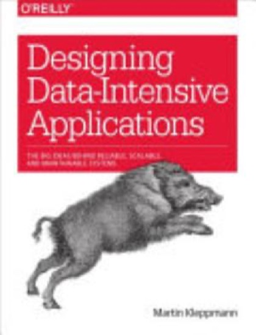

Writing / Book review
Designing Data-Intensive Applications: The Book That Rewires How You See Systems
Kleppmann's classic is still the best map of the trade-offs underneath every database, queue, and ML feature pipeline, and it explains why your AI system is really a data system.

- Book
- Designing Data-Intensive Applications
- Author
- Martin Kleppmann
- Publisher
- O'Reilly Media, 2017
- ISBN
- 9781449373320
- My rating
- ★★★★★ 5/5
VerdictThe single most important book for anyone building ML systems at scale. It does not teach a tool; it teaches the trade-offs every tool hides.
Most technical books age like milk. Designing Data-Intensive Applications (DDIA) ages like a good textbook, because it is not about tools. It is about the trade-offs every tool makes on your behalf, often without telling you. This review covers the first edition (2017). A second edition, co-authored with Chris Riccomini, updates the examples, but the ideas below are the ones that made the first edition a classic.
What the book is really about
Kleppmann organizes the book around three properties every data system juggles:
Then it builds from a single machine up to a distributed fleet:
The ideas that stuck with me
Storage engines are trade-offs, not features
Once you see this, you stop asking "which database is best" and start asking "what is my read/write ratio and latency requirement?"
Replication lag is a product bug
The chapter on replication made me rethink "eventual consistency." Eventual can mean seconds, and users notice.
The fix patterns (read-your-writes, monotonic reads, consistent prefix reads) are exactly the guarantees your users assume and your system may not provide.
Derived data is everything
Part III argues that most of a modern architecture is derived data: caches, indexes, materialized views, and, I would add, ML features and embeddings. They are all functions of a system of record, kept in sync by batch or stream processing.
Why this matters for AI engineers
Here is the argument for AI engineers: many "model problems" in production are data-system problems in disguise. DDIA gives you the vocabulary to diagnose them:
| ML production symptom | The DDIA concept underneath | Chapter |
|---|---|---|
| Training-serving skew | Consistency of derived data | 11, 12 |
| Stale embedding index | Replication lag, derived-data freshness | 5, 11 |
| Feature pipeline double-counts events | Exactly-once processing, idempotence | 11 |
| New feature breaks old consumers | Schema evolution, forward and backward compatibility | 4 |
| Backfill gives different numbers | Deterministic batch processing | 10 |
What I would change
- Some technology examples in the first edition are dated. The principles are not, and the second edition refreshes the examples.
- Vector databases and embedding indexes are not covered in the first edition. A modern reader has to do the mapping, though the derived-data framing makes that easy.
Who should read it
| Reader | Value |
|---|---|
| ML / AI engineer | Very high: explains most production failures |
| Backend engineer | Essential |
| Data scientist moving to production | High, read Parts I and III first |
| Engineering leader | High, it sharpens architecture reviews |
Verdict
Five stars, no hesitation. If you build AI systems and have not read DDIA, you are debugging data systems without a map.

Shivam Negi is an AI engineer and Principal Data Scientist who works on evaluating voice agents, small language models, and applied ML. More about me